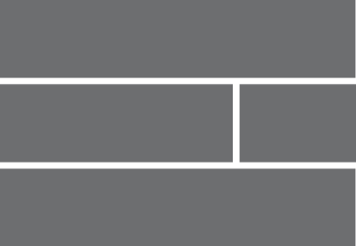
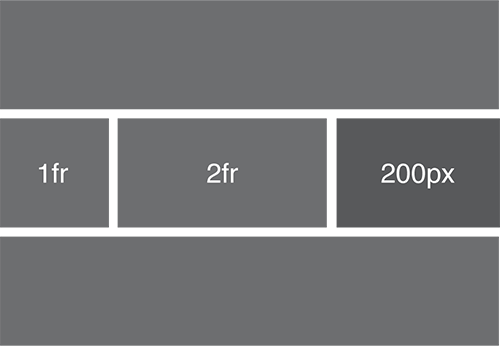

Learning CSS Grid
Originally posted on 1st September 2016
For the first time, the web has a made for purpose layout system. CSS Grid is no doubt the future, here’s what I learned in the first week of using it…
I’ve been excited about learning CSS Grid Layout for some months now. After hearing Rachel Andrew speak about it several times in the past year it really feels like what web designers have been waiting for.
Before we get into the details, it’s worth saying that this article only skims the surface of what CSS Grid can do. If you’ve never tried it before, you’re going to be surprised how quickly you can put together solid layouts with minimal code.
Basic layout
There is an extremely low barrier to entry with CSS Grid. Let’s get started with a basic layout such as a Header, Main content area, Sidebar and Footer.
<div class="wrapper">
<header></header>
<div class="main"></div>
<div class="sidebar"></div>
<footer></footer>
</div>Without needing to add any presentational markup to the HTML we can create a layout purely in CSS.
First define the grid on the parent container:
.wrapper {
display: grid;
}That’s it, you’re now using CSS Grid.
Now let’s define the column structure. For this example we'll use 2 columns, 600px column on the left, next to a 300px column on the right:
.wrapper {
display: grid;
grid-template-columns: 600px 300px;
}
Rows can be defined in the same way but for this example we can use auto. This will create the rows we need for us:
.wrapper {
display: grid;
grid-template-columns: 600px 300px;
grid-template-rows: auto auto;
}
Gutters in CSS Grid are defined by using grid-column-gap, you can set both column gaps and row gaps like so:
.wrapper {
display: grid;
grid-template-columns: 600px 300px;
grid-template-rows: auto auto;
grid-column-gap: 16px;
grid-row-gap: 16px;
}Positioning the elements
Layout is defined in terms of grid lines, you need to specify a start and end point. For example, for an element to span across 2 columns it needs to start at grid line 1 and end at grid line 3.
Starting with the header we want to do exactly that, start at grid line 1 and end at gridline 3. Rows work in the same way. Start at row 1 and end at row 2. Collectively this means the header will span 2 columns and 1 row.
header {
grid-column: 1/3;
grid-row: 1/2;
}
Our main content area comes next. We want this to span the 600px column but stop before the 300px column. We also want it to be one row below the header.
.main {
grid-column: 1/2;
grid-row: 2/3;
}
Now for the sidebar. It needs to start at grid line 2 and end at grid line 3 but sit on the same row as the main content.
.main {
grid-column: 1/2;
grid-row: 2/3;
}
.sidebar {
grid-column: 2/3;
grid-row: 2/3;
}
The footer is much like the header, but we need to set the row so it sits below the main content and sidebar.
footer {
grid-column: 1/3;
grid-row: 3/4;
}
The grid we've just made should look something like this:
Fluid grids
The above example is great start but it’s unlikely you’ll be using fixed px units for your grid columns.
The fr unit
Although you can use percentages in CSS Grid there’s a much more suitable unit for the task at hand. Welcome the fr (fraction) unit.
Let’s take the layout we've already created and make it fluid
We want the main area to be twice the size of the sidebar, we can define this as grid-template-columns: 2fr 1fr.
.wrapper {
display: grid;
grid-template-columns: 2fr 1fr;
grid-template-rows: auto auto;
grid-column-gap: 16px;
grid-row-gap: 16px;
}Mixing it up
Something that has always been quite a struggle is mixing fluid and fixed column widths. CSS Grid makes this really simple, you can mix fr and px. In this example let’s make the sidebar fixed at 200px but keep the main content area fluid.
.wrapper {
display: grid;
grid-template-columns: 1fr 200px;
grid-template-rows: auto auto;
grid-column-gap: 16px;
grid-row-gap: 16px;
}You can add as many fluid or fixed columns as you need. Here we’ll stick with the fixed 200px sidebar and then divide the remaining space into 2 fluid columns, with the second one being one twice the width of the other.
.wrapper {
display: grid;
grid-template-columns: 1fr 2fr 200px;
grid-template-rows: auto auto;
grid-column-gap: 16px;
grid-row-gap: 16px;
}That would look like this:
What about the 12-col grids I'm used to?
As refreshing as it can be to just create a specific grid for your immediate content needs we’re somewhat used to using 12-col grids and spanning columns. The fr unit makes this entirely possible. Rather than adding 12 x 1fr we can use a repeat function. Adding grid-template-columns: repeat(12, 1fr); will “repeat” 1fr 12 times, creating a 12 column grid with each column having an equal width.
.wrapper {
display: grid;
grid-template-columns: repeat(12, 1fr);
grid-template-rows: auto auto;
grid-column-gap: 16px;
grid-row-gap: 16px;
}Naming
To avoid confusion in your code it can be helpful to name the columns inside a grid container. You can do this by adding the name inside square brackets. I want my columns to be called "col" so this is added like so:
.wrapper {
display: grid;
grid-template-columns: repeat(12, [col] 1fr);
grid-template-rows: auto auto;
grid-column-gap: 16px;
grid-row-gap: 16px;
}Now we have a named set of columns we can reference this in CSS for the grid elements themselves like this: grid-column: col 1/2.
Spanning columns
When positioning elements on a grid like this, rather than specifying the start and end position explicitly we can instead span columns.
In this example we define the header of starting on column line 1 and spanning 12 columns.
header {
grid-column: col 1 / span 12;
grid-row: 1/2;
}
If you don’t want to be explicit about the start position and let CSS Grid automatically place your grid items in source order you don’t have to be. Just add the amount of columns you want this element to span.
header {
grid-column: span 12;
grid-row: 1/2;
}
Going even further
When I worked for Gumtree.com, one problem I encountered often was incorporating fixed width display advertising into complicated fluid layouts. With CSS grid you can use the same concept as our basic example, just because we’re repeating 12 1fr columns doesn’t mean we can't add a fixed with column next to that. I've named this column “fixed”.
.wrapper {
display: grid;
grid-template-columns: repeat(12, [col] 1fr) [fixed]300px;
grid-template-rows: auto auto;
grid-column-gap: 16px;
grid-row-gap: 16px;
}This creates a grid that looks like this:
What next
Grid becomes even more powerful when you start to mix even more types of units, for example when using minmax() you can control the reflow and the way columns collapse at different sizes without breakpoints.
For example grid-template-columns: 1fr minmax(400px, 1fr) 1fr; will create a three-column grid. Each column is 1fr wide but the middle column cannot get smaller than 400px. This means, once the middle column hits 400px the outside columns continue to shrink, while the middle remains fixed. Imagine the layout possibilities!
Browser Support
CSS Grid is supported in all major browsers. To support older browsers you can use the feature query @supports which is like having Modernizr right there in your CSS.
.wrapper {
Your float based layout
}
@supports (display: grid) {
.wrapper {
Your grid based layout
}
}Happy gridding!